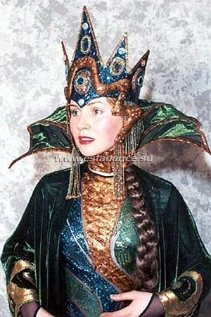
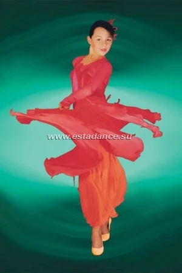
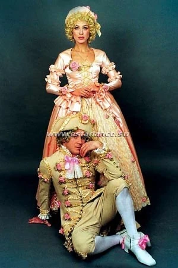

Театральные
Хозяйка Медной горы
Костюм и головной убор для новогоднего представления в Мэрии Москвы. Художник Ольга Оськина.
Работа ательеДом моделей
Пошив для одного артиста, пары или коллектива. Ателье работает с бальными и сценическими костюмами, спортивными программами и малыми сериями.
Обсудить изделие
Театральные
Костюм и головной убор для новогоднего представления в Мэрии Москвы. Художник Ольга Оськина.
Работа ателье
Европейские
Платье для европейской программы бальных танцев, выполненное мастерами «ЭСТАРТа».
Работа ателье
Театральные
Костюмы для спектакля Театра имени Станиславского. Эскизы С. Логофет.
Работа ательеОбсудите программу, движения и состав исполнителей. Дизайнер готовит эскизы и помогает выбрать материалы и отделку.
Услуги дизайнеровВ ателье дизайнер ведёт изделие до сдачи и проводит примерки. Для дистанционного заказа мерки снимают по таблице Дома моделей.
Как снять меркиРасчёт зависит от сложности, ткани, отделки, количества и срока. Для заказа из региона ателье указывает предоплату 50% согласованной примерной стоимости.
Заказ в регионы